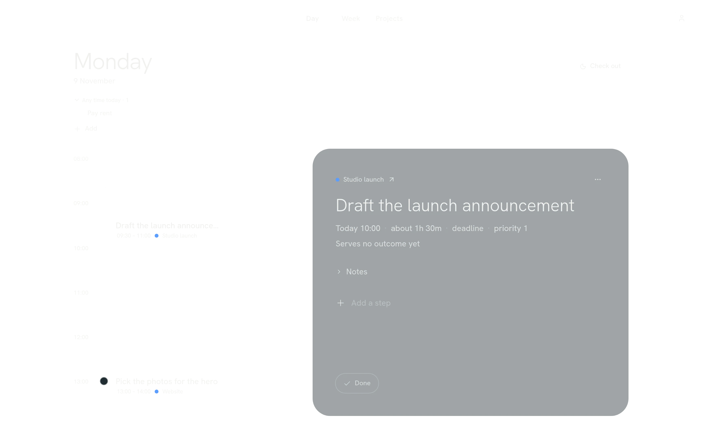
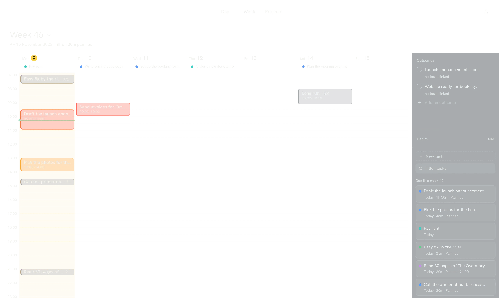
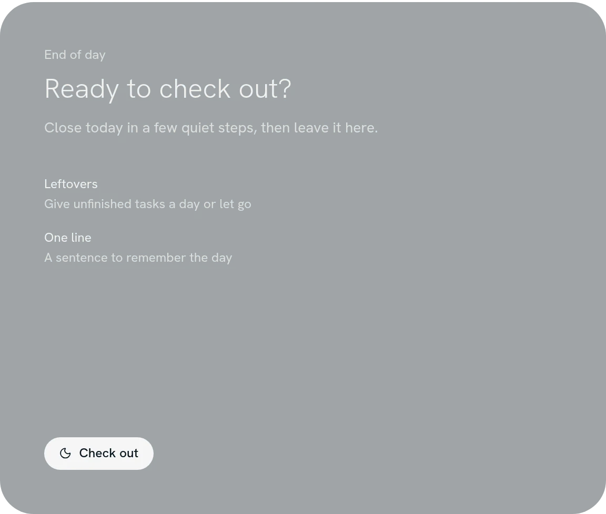

Keep today small.
skkil time is a planner for your tasks, projects and weeks. Each morning you pick up to three musts and give them a place on the day. The sky behind it follows the hour.

Write it down the way you'd say it.
Type a task in one line. Quick Add picks out the date, time, repeat, deadline, priority, project and length as you write. This box runs the same parser as the app, so try your own.
Three musts, then the rest of the day.
Mark up to three tasks as today's musts. Give them a slot on the timeline, or leave them for any time. Open a task and it sits beside the day with its notes and steps.

Projects that hold the real work.
- Nest projects up to three deep and gather them into groups.
- See the same tasks as a list, a board or a timeline, with a notes page beside them.
- Let a task wait on another, so the ones you can start stand out.
- Keep long-running things, like one job application per company, as records that move through phases.

See the week before it starts.
Drag tasks onto the week and give it up to three outcomes. Link tasks to an outcome and you can see what each one is for.

Close the day on purpose.
In the evening, Check out goes through what's left over and asks for one line to remember the day by. Morning, wind-down and weekly routines work the same way: full screen, one step at a time.

Once a week, look back.
The weekly review asks how the week felt before it shows you anything. Then it goes through your outcomes, clears the deck, asks for one change and plans the next week. Each quarter it steps back to your priorities for the next 13 weeks.

Your planner, on every device.
Desktop, web and phone each keep their own copy of your plans and work offline. Sign in and they stay in sync. On desktop you can skip the account and keep everything on your machine.
Open in your browser